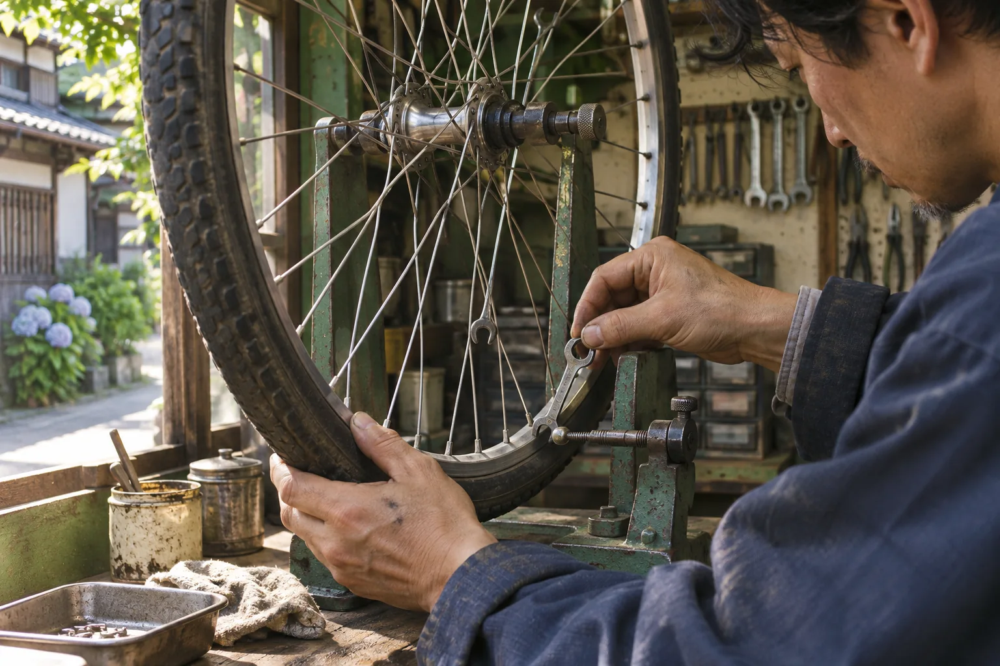

まちの輪
走り慣れた一台を、もう一度。
当日受付17:00まで

気になる症状は？
通学車から小径車まで。車体を見て、作業の前に料金と、預かる時間をお伝えします。
タイヤの空気が抜ける
パンク修理 1,400円から。穴の位置とタイヤの傷を見て、交換が必要か判断します。目安30分。
ブレーキの効きが弱い
前後の調整 1,600円から。シューやワイヤーを交換する場合は別途部品代。目安40分。
漕ぐと音がする
異音点検 1,100円から。音が出るギアや、いつ頃から鳴るかを受付で教えてください。